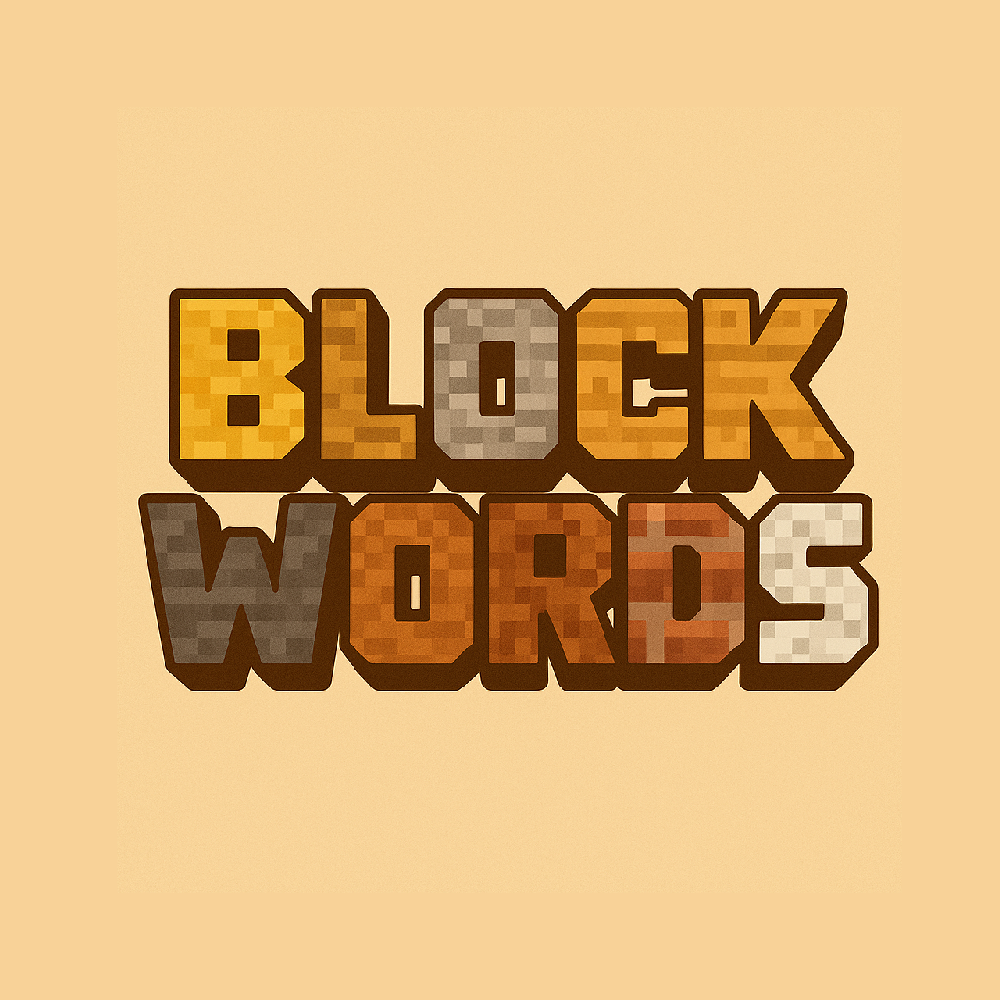

BlockWords
Give your team hints to guess the correct blocks, but be careful not to reveal too much...
Download
View Docs
Collection of Datapacks I have made mostly for personal use. Mostly focused on improving progression/balance while maintaining a vanilla feel.

Give your team hints to guess the correct blocks, but be careful not to reveal too much...

Depth-based mechanics, underground smelting boosts, and spelunking-focused recipes to make living below Y=40 worthwhile.

Reworks villager trades to slow early-game power creep while rewarding town planning and infrastructure.

Food tiers, weather risks, and infrastructure-driven bonuses that make settlement building the optimal path.

Short description of what this datapack does and why players should try it. Keep it to two lines if possible.